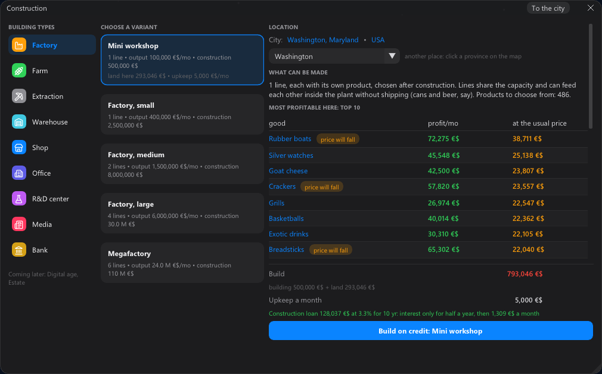
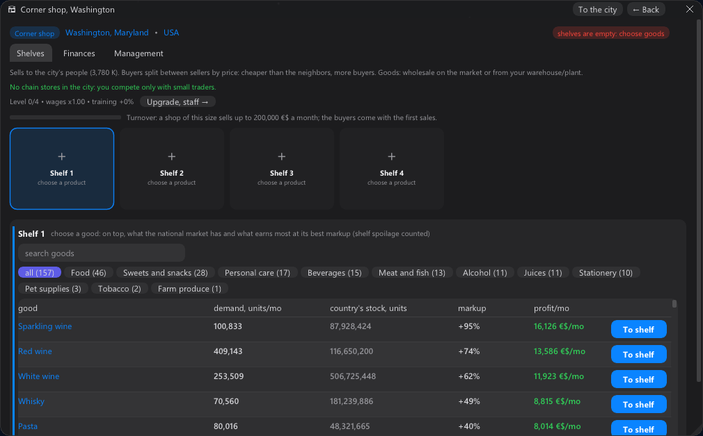
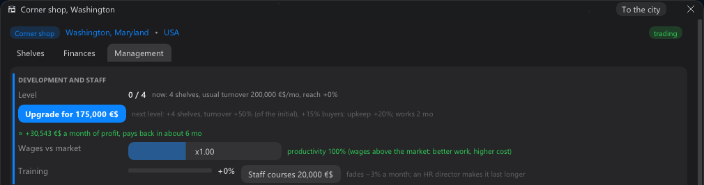

In 0.13 a newcomer got through the first 15 minutes. Then they got stuck: a whole year with one shop, because the
cheapest plant cost five times as much and there was nothing in between. 0.14 puts steps on that road.

Shop → mini workshop → factory
✚ A mini workshop. A new step between the shop and the small factory: one line, a quarter of a factory,
and with the land it costs about as much as a shop.
✚ A construction loan. Once your buildings have been in the black for half a year, the bank lends up to
75% of a plant, farm or mine against the building itself: 10 years, interest only for the first six months. The
build window has a "Build on credit" button.
✚ The tutorial and the advisor lead up the ladder shop → mini workshop → factory and tell you when the bank
is ready to lend.
✚ Debt under watch. A construction loan leaves room below the bank's limit, and the advisor warns you when
the debt comes close to it.
✚ "No inputs". Goods whose inputs the country's market does not sell are marked red in a new plant's list
and go to the bottom.
The shop
✚ A markup for every good. The "To shelf" list finds for each good the markup that earns its shelf the
most: how many of the city's buyers want it and how much they care about the price. "To shelf" sets it for you,
and the profit in the list is after tax.
✚ What an upgrade brings. Under the "Upgrade" button: "+N a month, pays back in about M months" — in the
building's card and at the end of the first chapter.
✚ A fair wage for a manager. They are paid by the building's real size: about 16 thousand a month in a corner
shop, not 31 thousand of its 45 thousand profit.
✚ English: the magnates' news is translated, and the chapter button no longer gets cut off.


Saves of 0.13 load in 0.14.
And a question for you. Which line sounds more like a game you'd want to play? A: "An economic strategy on the real map of the Earth." B: "Start with a street kiosk in 2000. Survive the dot-com crash, 2008 and your own relatives. Buy a country."
One letter in the comments is enough.